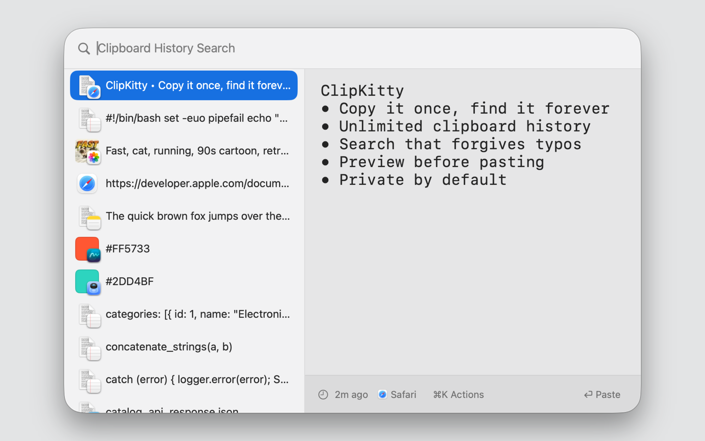
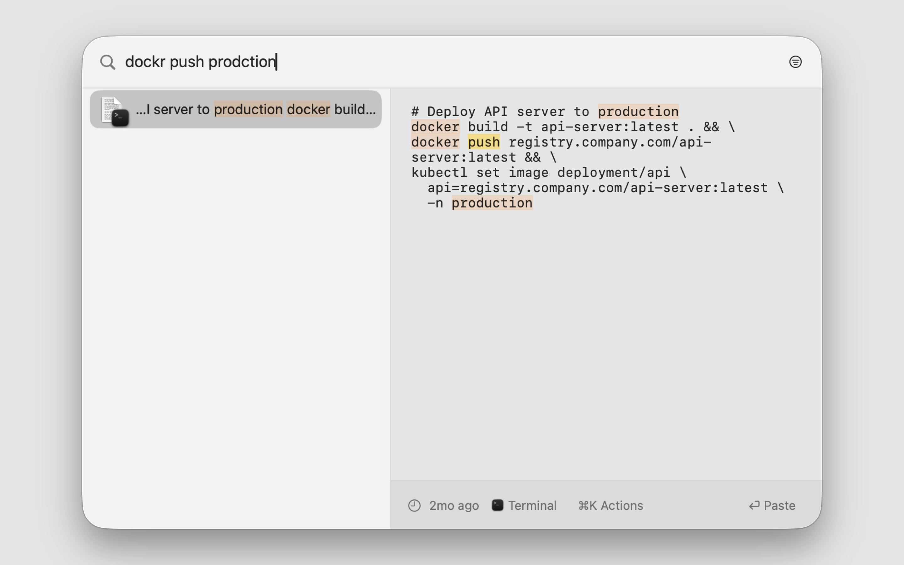
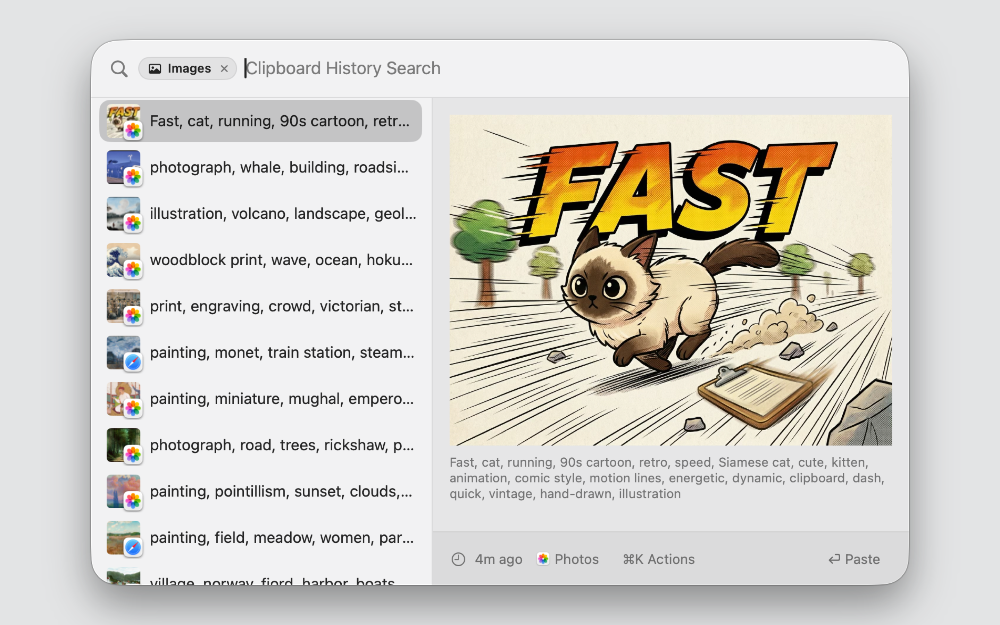

ClipKitty
Never lose what you copied.
Unlimited history • Instant fuzzy search • Live preview • iCloud Sync • Private by default



Why it exists
You copied that command last week. That code snippet yesterday. That address six months ago. Your clipboard manager either forgot it, couldn't find it, or cut off half the content.
ClipKitty stores everything. Finds it in milliseconds; whether you have 100 items or 100,000. Built for people who copy lots of things and need to find them again.
Why ClipKitty?
|
ClipKitty |
| vs Maccy |
Same simplicity, no limits. Maccy caps at 999 items, slows past 200, and has no multi-device sync. ClipKitty scales to millions and syncs across Macs via iCloud. |
| vs Raycast |
Same speed, better search, no expiration. Raycast doesn't save long clips; its free tier expires after 3 months and sync requires a paid subscription. ClipKitty preserves everything forever, syncs via iCloud for free, and finds it faster with smarter, typo tolerant search. |
| vs Paste |
Same utility, no subscription. Paste charges $30/year. ClipKitty is free on GitHub or pay once on the App Store. |
Features
- Unlimited History: No caps, no expiration. Text, images, files, colors; everything preserved in full, forever.
- Fuzzy Search That Scales: Type "improt" and find "import". Type "dockr prodction" and find "docker push production". All under 50ms; even with millions of items.
- Live Preview Pane: See full content instantly as you navigate. Multi-line text, code blocks, images; no truncation, no waiting on tooltips.
- OCR & Smart Search: Search text inside images and screenshots. AI-powered descriptions make visual content searchable.
- Keyboard-First:
⌥Space to open, arrow keys to navigate, Return to paste. ⌘1-9 for quick access.
- iCloud Sync: Optionally sync your clipboard history across all your Macs via iCloud. Enable it in settings when you want your history everywhere.
- Privacy-First: 100% on-device by default. No telemetry, no accounts. Optional iCloud Sync uses only your private iCloud container.
- Secure & Attested: Don't take my word for it. Source code is fully open source and auditable. Builds are attested: you can verify the app was built from the public source code.
Installation
Quick Install

Manual Download
- Download the latest DMG from GitHub Releases.
- Drag ClipKitty to your Applications folder.
Getting Started
- Press ⌥Space to open your clipboard history.
- Type to fuzzy search.
- Use Arrow Keys to navigate and Return to paste.
Keyboard Shortcuts
| Shortcut |
Action |
| ⌥Space |
Open clipboard history |
| ↑ / ↓ |
Navigate |
| Return |
Paste selected item |
| ⌘1–9 |
Jump to item 1–9 |
| Tab |
Cycle content type filter |
| Escape |
Close |
Building from Source
git clone https://github.com/jul-sh/clipkitty
cd clipkitty
make
Requires macOS 15+ and Swift 6.2+.
How Search Works
Search is a latency problem disguised as a text problem.
The search system has a few hard requirements:
- it has to search as the user types, so every keystroke is on the hot path
- it has to stay fast on large histories, not just toy databases
- it has to keep full long documents searchable, not silently truncate them away
- it has to handle fuzzy matching and typo tolerance, because exact-match search is too brittle for clipboard recall
- it has to return one clipboard item per result, even if the internal search representation is more granular
- it has to show useful snippets, previews, and highlights, not just IDs and scores
Those requirements pull against each other. The naive approach is: every time the user types, scan every clipboard item, compute a fuzzy score against the full text, and sort the results. That works for 100 items. It stops working at 100,000 items, and it really stops working when some items are hundreds of kilobytes or megabytes long.
ClipKitty solves that by splitting search into cheap recall and expensive judgment:
- Store everything in full.
The source of truth lives in SQLite. Nothing is truncated out of storage. If you copied a huge log, code file, or stack trace, the whole thing is still there.
- Index searchable units, not just rows.
Small items are indexed as one unit. Large items are indexed as overlapping chunks. This matters because relevance is usually local. If one 16 KB region is a great match, we want to reason about that region, not pay to analyze the entire 1 MB document on every query.
- Use Tantivy for fast broad recall.
For normal queries, Tantivy indexes trigrams and word positions. That gives a cheap first pass that is typo-tolerant and can still reward phrase-like matches. For very short queries, ClipKitty uses a simpler prefix/contains path because trigrams are not a good fit below 3 characters.
- Collapse chunks back to one parent item immediately.
Large items are chunked internally, but the product is still item-based. During Phase 1 collection, ClipKitty keeps only the best hit per parent item. If 20 chunks from one giant document match, that still becomes one candidate, not 20.
- Make large documents earn their way in.
A huge document almost always contains common words like
the, error, or function. Without adjustment, those documents float upward on weak evidence and flood the expensive path. Phase 1 therefore blends Tantivy relevance with recency and a size-aware penalty for weak large-document matches. Strong local evidence still wins. Weak “it matched somewhere” evidence does not.
- Only rerank the head.
Phase 2 is the high-quality, expensive reranker. It does more detailed matching and prepares the signals used for final ordering. But there is no reason to spend that cost on the entire tail. ClipKitty reranks only a bounded top slice, then appends the rest in Phase 1 order.
- Use the matched region for snippets, highlights, and preview bootstrapping.
For large items, the row snippet and highlight analysis come from the best matching chunk, not from the top of the document. That makes results more legible and avoids wasting time analyzing irrelevant parts of large content on the hot path. When a full preview is opened, those chunk-local highlights are mapped back into full-document offsets.
The important idea is that search quality does not come from doing expensive work on everything. It comes from doing cheap work to find plausible candidates, then doing expensive work only where it can change what the user sees.
Problems This Solves
- Typos without brute force: trigram recall finds
improt when the stored text says import.
- Scale without truncation: large items stay fully searchable without forcing every query to scan their full text.
- Large documents stop polluting common queries: a 1 MB document no longer ranks highly just because it contains
error 300 times.
- Relevant previews: snippets come from the matched region instead of the first lines of a huge paste.
- Useful highlighting: highlighted regions reflect where the match actually happened, including inside large documents.
- Stable latency: the hot path is bounded by chunk size and head size, not by total bytes in the worst matching documents.